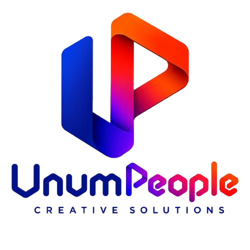
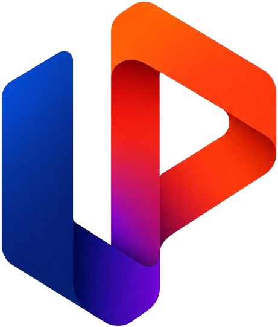
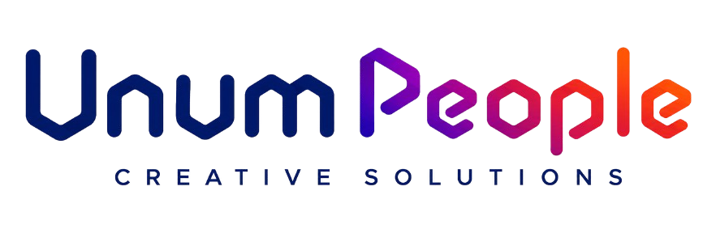

O caminho mais curto entre você e o seu cliente.
A Unum People desenvolve tecnologia para eliminar a fricção técnica do microempreendedor. Nosso ecossistema atua como a ponte invisível que conecta quem vende a quem compra, sem intermediários.
Operamos no modelo People to People (P2P), garantindo que você esteja no comando do seu ecossistema de relacionamento comercial.
"A tecnologia é a ponte invisível; a relação direta e o resultado prático são o foco."
Atuar em convergência. Assim como as ferramentas operam em um único ecossistema indivisível, trabalhamos para que o empreendedor e seu cliente estejam alinhados, eliminando divisões.
Estabelecer pontes legítimas. A tecnologia não é um fim isolado, mas o meio para criar vínculos autênticos, ligando propósitos e necessidades de forma direta e honesta.
Priorizar as pessoas antes das transações. Negócios são sustentados pela confiança. O software existe para servir ao próximo e humanizar o contato comercial.
Caminhar lado a lado. O crescimento é um processo contínuo que exige perseverança. Comprometemo-nos a acompanhar o empreendedor, respeitando seu tempo.
Gerar frutos reais. O trabalho deve renovar a realidade à nossa volta. Buscamos gerar impacto positivo, permitindo que os negócios prosperem de forma justa e sustentável.
Aplicação preferencial sobre fundos claros.
Margem mínima de 2X (onde X é a altura do 'U').

Pode ser utilizado isoladamente em avatares (redes sociais), ícones de aplicativos e em reduções extremas onde o texto completo ficaria ilegível.

Utilizado em aplicações limpas quando o símbolo já estiver fortemente presente em outro local da mesma peça visual ou layout.
Versão Negativa
Monocromático
Fundo Azul
Unum Dark Blue
#0A1C82
Support Grey
#6E7191
Absolute White
#FFFFFF
A assinatura visual "Unum People" utiliza uma fonte display customizada. Suas hastes grossas e cantos arredondados (rounded) garantem uma percepção tecnológica, fluida e acessível. Esta fonte é de uso exclusivo para o logotipo.
Geométrica, moderna e amigável, utilizada para todos os textos da marca.
Aa Bb Cc Dd Ee Ff Gg Hh
Aa Bb Cc Dd Ee Ff Gg Hh
Aa Bb Cc Dd Ee Ff Gg Hh
Aa Bb Cc Dd Ee Ff Gg Hh
Conectamos ideias e impulsionamos pessoas.
Desenvolvemos soluções criativas e robustas que reduzem as barreiras digitais, promovendo uma interação mais humana e fluida entre todos os usuários.